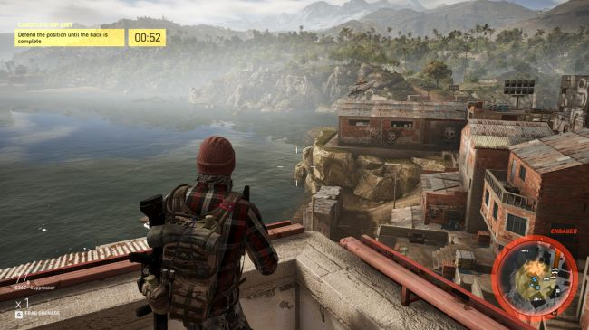

NIER: AUTOMATA
On a ruined Earth, the last fragments of humanity are locked in an endless war with a robot army. Controlled by a mysterious alien intelligence, these machines have conquered the planet and driven the survivors to flee to a base on the Moon. From here, in a facility known as the Bunker, mankind wages war on the invaders using machines of their own. Androids are sent to the surface to work with local resistance fighters and battle the machines. And one of these androids is the protagonist of Nier: Automata, a powerful combat model designated YoRHa No.2 Type B, or 2B for short.
Automata is a sequel, but you don’t need to play the original to understand it. Which is for the best, as it was never released on PC. There are some references that fans of the first game—which has become something of a cult favourite—will appreciate. But otherwise it’s a standalone story that you can dive into with no prior knowledge. It’s a lightweight open-world RPG with a heavy focus on challenging combat, which is where developer PlatinumGames makes its presence felt. This is the talented Osaka studio behind the likes of Bayonetta, Vanquish, and Metal Gear Rising, and its distinctive brand of deep, stylish combat elevates Nier above most third-person action games.

When 2B engages an enemy, she explodes with dazzling, violent energy. Whether she’s fighting with a long, elegant samurai sword or a pair of chunky metal gauntlets, the animation is remarkably fluid and graceful. Combinations of heavy and light attacks reveal an impressive range of moves, including many where she flings her weapon as a spinning projectile. Every weapon, from colossal greatswords to nimble spears, has its own suite of attacks, meaning there’s a lot of nuance to uncover. And weapons even have their own backstories, revealed as you spend money and materials on upgrading them.

Automata is a remarkable game with an incredible amount of style, personality, and flair. Its tendency to repeat enemies, locations, and bosses can dampen your enjoyment, however, and the PC port isn’t great. Cutscenes are locked to 30fps, which make them look distractingly jerky. The mouse cursor kept appearing in the centre of my screen. And on one test machine running an AMD card, the game crashed to a white screen every ten minutes for seemingly no reason. A game this interesting deserves a better port, frankly. But tech woes aside, this is one of the most unique and compelling action games on PC.
Other Reviews
THE HUNTER: CALL OF THE WILD

DESYNC

GHOST RECON WILDLANDS
MASS EFFECT: ANDROMEDA